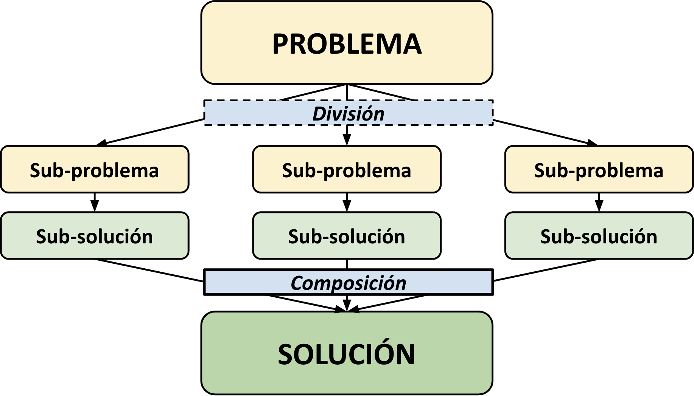
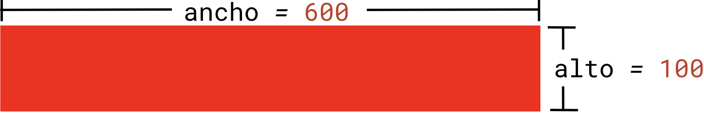
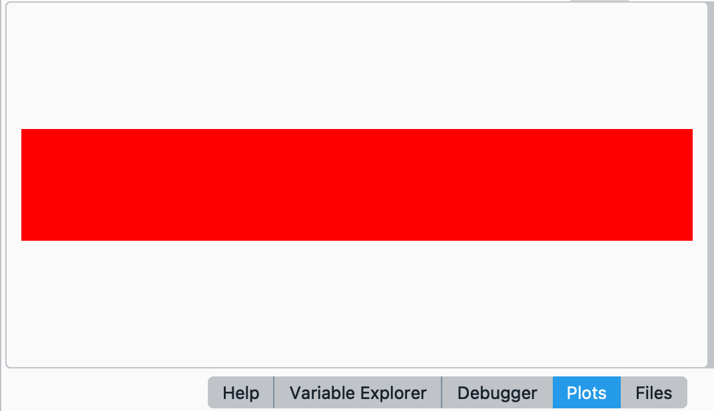
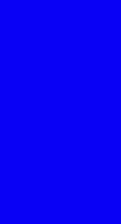
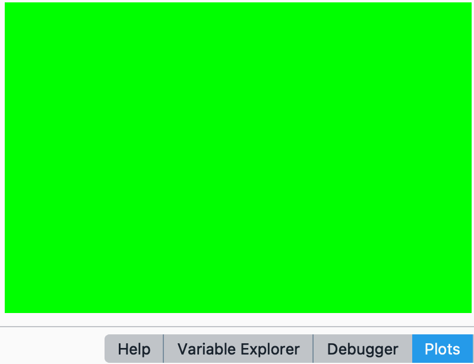
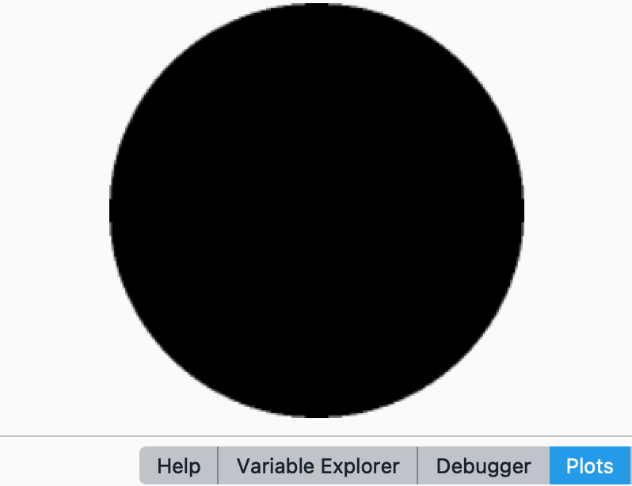
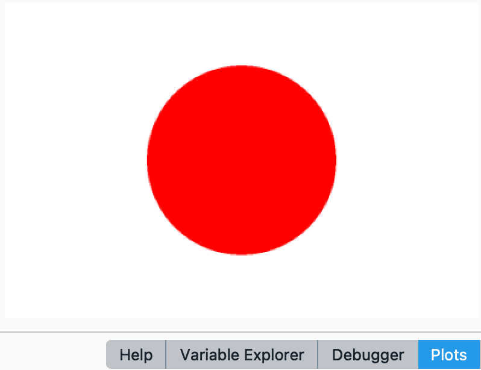
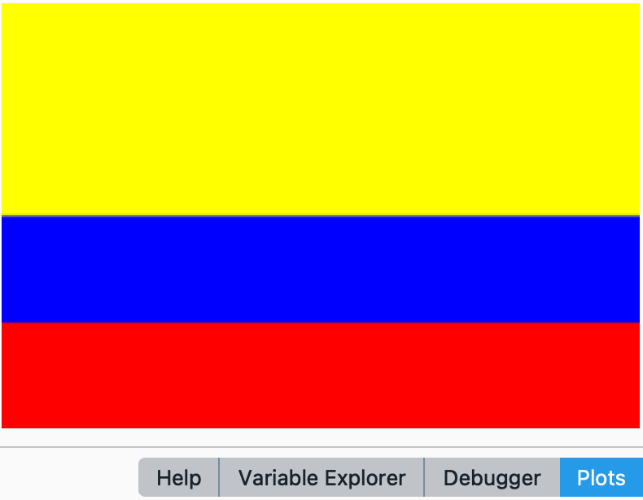
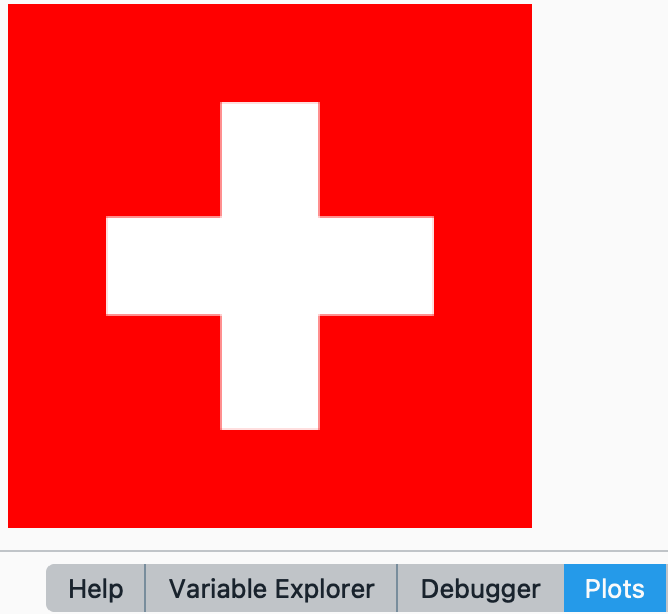

<!DOCTYPE html>
<html lang="en">
  <head>
    <meta charset="utf-8" />
    <meta name="viewport" content="width=device-width, initial-scale=1.0, maximum-scale=1.0, user-scalable=no" />

    <title></title>
    <link rel="stylesheet" href="dist/reveal.css" />
    <link rel="stylesheet" href="dist/theme/iph.css" id="theme" />
    <link rel="stylesheet" href="plugin/highlight/spyder.css" />
	<link rel="stylesheet" href="css/layout.css" />
	<link rel="stylesheet" href="plugin/customcontrols/style.css">


    <script defer src="dist/fontawesome/all.min.js"></script>

	<script type="text/javascript">
		var forgetPop = true;
		function onPopState(event) {
			if(forgetPop){
				forgetPop = false;
			} else {
				parent.postMessage(event.target.location.href, "app://obsidian.md");
			}
        }
		window.onpopstate = onPopState;
		window.onmessage = event => {
			if(event.data == "reload"){
				window.document.location.reload();
			}
			forgetPop = true;
		}

		function fitElements(){
			const itemsToFit = document.getElementsByClassName('fitText');
			for (const item in itemsToFit) {
				if (Object.hasOwnProperty.call(itemsToFit, item)) {
					var element = itemsToFit[item];
					fitElement(element,1, 1000);
					element.classList.remove('fitText');
				}
			}
		}

		function fitElement(element, start, end){

			let size = (end + start) / 2;
			element.style.fontSize = `${size}px`;

			if(Math.abs(start - end) < 1){
				while(element.scrollHeight > element.offsetHeight){
					size--;
					element.style.fontSize = `${size}px`;
				}
				return;
			}

			if(element.scrollHeight > element.offsetHeight){
				fitElement(element, start, size);
			} else {
				fitElement(element, size, end);
			}		
		}


		document.onreadystatechange = () => {
			fitElements();
			if (document.readyState === 'complete') {
				if (window.location.href.indexOf("?export") != -1){
					parent.postMessage(event.target.location.href, "app://obsidian.md");
				}
				if (window.location.href.indexOf("print-pdf") != -1){
					let stateCheck = setInterval(() => {
						clearInterval(stateCheck);
						window.print();
					}, 250);
				}
			}
	};


        </script>
  </head>
  <body>
    <div class="reveal">
      <div class="slides"><section  data-markdown><script type="text/template"><!-- .slide: class="has-light-background drop" data-background-color="#f8f8f8" -->
<div class="" style="position: absolute; left: 0px; top: 0px; height: 700px; width: 960px; min-height: 700px; display: flex; flex-direction: column; align-items: center; justify-content: center" absolute="true">

### <i class="fas fa-award"></i> IP Honores

 ####  *Laboratorio 3 de Nivel 1 - N1-L3*

[Eduardo Rosales](mailto:ee.rosales24@uniandes.edu.co)

Departamento de Ingeniería de Sistemas y Computación

Universidad de los Andes
</div></script></section><section  data-markdown><script type="text/template"><!-- .slide: class="has-light-background drop" data-background-color="#f8f8f8" -->
<div class="" style="position: absolute; left: 0px; top: 0px; height: 700px; width: 960px; min-height: 700px; display: flex; flex-direction: column; align-items: center; justify-content: center" absolute="true">

### Instrucciones generales

- **Objetivos**
	- Afianzar la comprensión de la **composición de funciones**
		
<br>

- **¿Preguntas?**
	- Formule su pregunta de forma **muy clara y concisa**
		- Luego (**y solo luego de esto**)
			- Levante la mano
</div></script></section><section  data-markdown><script type="text/template"><!-- .slide: class="has-light-background drop" data-background-color="#f8f8f8" -->
<div class="" style="position: absolute; left: 0px; top: 0px; height: 700px; width: 960px; min-height: 700px; display: flex; flex-direction: column; align-items: center; justify-content: center" absolute="true">

### Composición de funciones (repaso)

 - Ejecutar múltiples funciones en secuencia

- La salida de una función → Entrada de otra función
  - Todo en una sola línea

- Los tipos deben ser compatibles entre funciones

- El orden de la composición es clave
</div></script></section><section  data-markdown><script type="text/template"><!-- .slide: class="has-light-background drop" data-background-color="#f8f8f8" -->
<div class="" style="position: absolute; left: 0px; top: 0px; height: 700px; width: 960px; min-height: 700px; display: flex; flex-direction: column; align-items: center; justify-content: center" absolute="true">

### Composición (1/2)


</div></script></section><section  data-markdown><script type="text/template"><!-- .slide: class="has-light-background drop" data-background-color="#f8f8f8" -->
<div class="" style="position: absolute; left: 0px; top: 0px; height: 700px; width: 960px; min-height: 700px; display: flex; flex-direction: column; align-items: center; justify-content: center" absolute="true">

### Composición (2/2)

- Construir soluciones complejas con funciones simples
 - Aplicar el SRP
	 - Divide problemas grandes en partes funcionales
	 - Cada función soluciona una parte del problema

	<br>

- **Ejemplo del mundo real:** Preparar un plato de comida
	- Ingredientes crudos (entrada) → Plato final (salida)
	- Pasos intermedios (funciones):
		- `comprar_ingredientes()`
	    - `marinar()`
	    - `cocer()`
	    - `emplatar()`
	    - `servir()`
</div></script></section><section  data-markdown><script type="text/template"><!-- .slide: class="has-light-background drop" data-background-color="#f8f8f8" -->
<div class="" style="position: absolute; left: 0px; top: 0px; height: 700px; width: 960px; min-height: 700px; display: flex; flex-direction: column; align-items: center; justify-content: center" absolute="true">

###  Actividad I

- **Objetivo:**
	- Familiarizarse con PyTamaro
</div></script></section><section  data-markdown><script type="text/template"><!-- .slide: class="has-light-background drop" data-background-color="#f8f8f8" -->
<div class="" style="position: absolute; left: 0px; top: 0px; height: 700px; width: 960px; min-height: 700px; display: flex; flex-direction: column; align-items: center; justify-content: center" absolute="true">

### PyTamaro

- Librería para _enseñar composición de funciones_ con gráficos
	- Librería:
		- Conjunto de módulos con funciones reutilizables

- Permite jugar con:
	- Colores
	- Gráficos (rectángulos, elipses, triángulos, etc.)
	- Composiciones gráficas
</div></script></section><section  data-markdown><script type="text/template"><!-- .slide: class="has-light-background drop" data-background-color="#f8f8f8" -->
<div class="" style="position: absolute; left: 0px; top: 0px; height: 700px; width: 960px; min-height: 700px; display: flex; flex-direction: column; align-items: center; justify-content: center" absolute="true">

### Instalación de PyTamaro (1/2)

1. En la terminal de Spyder
	- Copiar y pegar la siguiente línea y 
		- Presionar `Enter` al final:

```plaintext
pip install pytamaro
```

<br> 

1. **DEBE REINICIAR Spyder** (cerrarlo y volverlo a abrir)
</div></script></section><section  data-markdown><script type="text/template"><!-- .slide: class="has-light-background drop" data-background-color="#f8f8f8" -->
<div class="" style="position: absolute; left: 0px; top: 0px; height: 700px; width: 960px; min-height: 700px; display: flex; flex-direction: column; align-items: center; justify-content: center" absolute="true">

### Instalación de PyTamaro (2/2)

3. Para probar que la instalación haya sido exitosa
	- Ejecutar la siguiente instrucción en el editor de Spyder:
	
```python
import pytamaro
print(pytamaro.__version__)
```


- La salida **DEBE** ser la versión de la librería
	- Ej:

```plaintext
1.1.2
```

- Si no es así, por favor repita el proceso de instalación
</div></script></section><section  data-markdown><script type="text/template"><!-- .slide: class="has-light-background drop" data-background-color="#f8f8f8" -->
<div class="" style="position: absolute; left: 0px; top: 0px; height: 700px; width: 960px; min-height: 700px; display: flex; flex-direction: column; align-items: center; justify-content: center" absolute="true">

### Documentación de Pytamaro

- La documentación de la librería **no está disponible en español**
	- Entonces, aquí se provee una versión traducida
		- **Solo de aquello** que vamos a usar en Nivel 1
</div></script></section><section  data-markdown><script type="text/template"><!-- .slide: class="has-light-background drop" data-background-color="#f8f8f8" -->
<div class="" style="position: absolute; left: 0px; top: 0px; height: 700px; width: 960px; min-height: 700px; display: flex; flex-direction: column; align-items: center; justify-content: center" absolute="true">

### `Graphic`

- Tipo de dato que representa un gráfico (imagen)
	-  Tiene una posición de anclaje (de fijación)
	- La posición de anclaje se usa en las siguientes operaciones:
		- Rotación: 
			- Para determinar el centro de rotación
		- Composición gráfica: 
			- Dos gráficos se alinean según su posición de anclaje
</div></script></section><section  data-markdown><script type="text/template"><!-- .slide: class="has-light-background drop" data-background-color="#f8f8f8" -->
<div class="" style="position: absolute; left: 0px; top: 0px; height: 700px; width: 960px; min-height: 700px; display: flex; flex-direction: column; align-items: center; justify-content: center" absolute="true">

### `Color`

-  Tipo de dato que representa un color
	- Un color tiene un grado de opacidad
		- Desde completamente transparente (Ej: transparente) hasta
			- Completamente opaco (Ej: rojo)

- Colores comunes:
	- Amarillo: `yellow`
	- Azul: `blue`
	- Rojo: `red`
	- Verde: `green`
	- Negro: `black`
	- Blanco: `white`
</div></script></section><section  data-markdown><script type="text/template"><!-- .slide: class="has-light-background drop" data-background-color="#f8f8f8" -->
<div class="" style="position: absolute; left: 0px; top: 0px; height: 700px; width: 960px; min-height: 700px; display: flex; flex-direction: column; align-items: center; justify-content: center" absolute="true">

### `rectangle()`

- Lea la documentación para saber cómo invocar a esta función de PyTamaro:

```Python
def rectangle(ancho: float, alto: float, color: Color) -> Graphic:
	"""
	Crea un rectángulo con el ancho y alto dados, relleno con un color dado.

    Nota: La función no muestra el rectángulo, solo lo crea y retorna.

	Args:
	    ancho (float):  Ancho del rectángulo en píxeles.
	    alto (float): Alto del rectángulo en píxeles.
	    color (Color): Color de relleno del rectángulo.
	
	Returns:
	    Graphic: El rectángulo especificado como un gráfico.
	"""
```
</div></script></section><section  data-markdown><script type="text/template"><!-- .slide: class="has-light-background drop" data-background-color="#f8f8f8" -->
<div class="" style="position: absolute; left: 0px; top: 0px; height: 700px; width: 960px; min-height: 700px; display: flex; flex-direction: column; align-items: center; justify-content: center" absolute="true">

### `show_graphic()`

- Lea la documentación para saber cómo invocar a esta función de PyTamaro:

```python
def show_graphic(grafico: Graphic) -> None:
    """
	Muestra un gráfico.
	
    Args:
        graphic (Graphic): Gráfico a mostrar.
    
    Returns:
        None: Muestra el gráfico en pantalla.
    """
```
</div></script></section><section  data-markdown><script type="text/template"><!-- .slide: class="has-light-background drop" data-background-color="#f8f8f8" -->
<div class="" style="position: absolute; left: 0px; top: 0px; height: 700px; width: 960px; min-height: 700px; display: flex; flex-direction: column; align-items: center; justify-content: center" absolute="true">

### `rectangle()` - Ejemplo de uso (1/3)

```python[1]
from pytamaro import rectangle, red, show_graphic
show_graphic(rectangle(600, 100, red))
```

- Al usar `from`
	- Se podrá invocar directamente a las funciones:
		- `rectangle` y  `show_grafic`
			- Y al color rojo rojo (`red`)
				- Solo usando su nombre
</div></script></section><section  data-markdown><script type="text/template"><!-- .slide: class="has-light-background drop" data-background-color="#f8f8f8" -->
<div class="" style="position: absolute; left: 0px; top: 0px; height: 700px; width: 960px; min-height: 700px; display: flex; flex-direction: column; align-items: center; justify-content: center" absolute="true">

### `rectangle()` - Ejemplo de uso (2/3)

```python[2]
from pytamaro import rectangle, red, show_graphic
show_graphic(rectangle(600, 100, red))
```


- `rectangle(600, 100, red)`
	- Crea un rectángulo
		- (NO lo muestra en pantalla aún)

	<br>



</div></script></section><section  data-markdown><script type="text/template"><!-- .slide: class="has-light-background drop" data-background-color="#f8f8f8" -->
<div class="" style="position: absolute; left: 0px; top: 0px; height: 700px; width: 960px; min-height: 700px; display: flex; flex-direction: column; align-items: center; justify-content: center" absolute="true">

### `rectangle()` - Ejemplo de uso (3/3)

```python[2]
from pytamaro import rectangle, red, show_graphic
show_graphic(rectangle(600, 100, red))
```


- `show_graphic(rectangle(600, 100, red))`
	- Muestra el rectángulo:
		- Así se ve en Spyder (pestaña **`Plots`**):



</div></script></section><section  data-markdown><script type="text/template"><!-- .slide: class="has-light-background drop" data-background-color="#f8f8f8" -->
<div class="" style="position: absolute; left: 0px; top: 0px; height: 700px; width: 960px; min-height: 700px; display: flex; flex-direction: column; align-items: center; justify-content: center" absolute="true">

### Quiz I

- Modifique el código usado anteriormente:

```python
from pytamaro import rectangle, red, show_graphic
show_graphic(rectangle(600, 100, red))
```

<br>

- Para crear y mostrar un **rectángulo azul de `100` x `150`**:


</div></script></section><section  data-markdown><script type="text/template"><!-- .slide: class="has-light-background drop" data-background-color="#f8f8f8" -->
<div class="" style="position: absolute; left: 0px; top: 0px; height: 700px; width: 960px; min-height: 700px; display: flex; flex-direction: column; align-items: center; justify-content: center" absolute="true">

### Quiz I - Solución


```python
from pytamaro import rectangle, blue, show_graphic
show_graphic(rectangle(100, 150, blue))
```

- Note que se importo a `blue`
	- En lugar de `red`
</div></script></section><section  data-markdown><script type="text/template"><!-- .slide: class="has-light-background drop" data-background-color="#f8f8f8" -->
<div class="" style="position: absolute; left: 0px; top: 0px; height: 700px; width: 960px; min-height: 700px; display: flex; flex-direction: column; align-items: center; justify-content: center" absolute="true">

#  Actividad II

- **Objetivo:**
	- Aprender a graficar rectángulos
</div></script></section><section  data-markdown><script type="text/template"><!-- .slide: class="has-light-background drop" data-background-color="#f8f8f8" -->
<div class="" style="position: absolute; left: 0px; top: 0px; height: 700px; width: 960px; min-height: 700px; display: flex; flex-direction: column; align-items: center; justify-content: center" absolute="true">

###  Quiz II


```python
    # TODO1: Importe todo lo que necesitará
		
    """
    Crea un rectángulo con la altura dada, un ancho proporcional de
	3/2 de esa altura, relleno del color dado.
	
    Nota: La función no muestra el rectángulo, solo lo crea y retorna.

    Args:
        alto (float): Alto del rectángulo en píxeles.
        color (Color): Color de relleno del rectángulo.

    Returns:
        Graphic: Un rectángulo con las dimensiones y color especificados.
    """
	# TODO2: Implemente la función: rectangulo_bandera().  
	
```
</div></script></section><section  data-markdown><script type="text/template"><!-- .slide: class="has-light-background drop" data-background-color="#f8f8f8" -->
<div class="" style="position: absolute; left: 0px; top: 0px; height: 700px; width: 960px; min-height: 700px; display: flex; flex-direction: column; align-items: center; justify-content: center" absolute="true">

### ¿Y los doctests?

- Tal y como se indica en las buenas prácticas del curso:
	-  <a href="https://eerosales24.github.io/iph_2025_10/general/buenas_practicas/#/14" target="_blank" rel="noopener noreferrer">BP-8 Casos de prueba</a>
		- No se crean doctests para funciones que producen gráficos

	<br>

- Para funciones que producen gráficos (Ej: PyTamaro)
	- La prueba es **visual**
		- Ver siguiente diapositiva
</div></script></section><section  data-markdown><script type="text/template"><!-- .slide: class="has-light-background drop" data-background-color="#f8f8f8" -->
<div class="" style="position: absolute; left: 0px; top: 0px; height: 700px; width: 960px; min-height: 700px; display: flex; flex-direction: column; align-items: center; justify-content: center" absolute="true">

### Quiz II - Resultado esperado

- Puede llamar a la función: `show_graphic()`
	- Para ver el resultado:

```python
alto = 300
show_graphic(rectangulo_bandera(alto, green))
```
- Que se vería así en la pestaña `Plots` de Spyder:


</div></script></section><section  data-markdown><script type="text/template"><!-- .slide: class="has-light-background drop" data-background-color="#f8f8f8" -->
<div class="" style="position: absolute; left: 0px; top: 0px; height: 700px; width: 960px; min-height: 700px; display: flex; flex-direction: column; align-items: center; justify-content: center" absolute="true">

#  Actividad III

- **Objetivos:**
	- Aprender a graficar círculos
	- Aprender a superponer gráficos
</div></script></section><section  data-markdown><script type="text/template"><!-- .slide: class="has-light-background drop" data-background-color="#f8f8f8" -->
<div class="" style="position: absolute; left: 0px; top: 0px; height: 700px; width: 960px; min-height: 700px; display: flex; flex-direction: column; align-items: center; justify-content: center" absolute="true">

### `ellipse()`

- Lea la documentación para saber cómo invocar a esta función de PyTamaro:

```python
def ellipse(ancho: float, alto: float, color: Color) -> Graphic:
    """
    Crea una elipse con el ancho y alto dados, rellena con un color dado.

    Nota: La función no muestra la elipse, solo la crea y retorna.

    Args:
        ancho (float): Ancho de la elipse en píxeles.
        alto (float): Alto de la elipse en píxeles.
        color (Color): Color de relleno de la elipse.

    Returns:
        Graphic: La elipse especificada como un gráfico.
    """
```
</div></script></section><section  data-markdown><script type="text/template"><!-- .slide: class="has-light-background drop" data-background-color="#f8f8f8" -->
<div class="" style="position: absolute; left: 0px; top: 0px; height: 700px; width: 960px; min-height: 700px; display: flex; flex-direction: column; align-items: center; justify-content: center" absolute="true">

### Elipse - Ejemplo de uso (1/2)

```python
from pytamaro import Color, Graphic, ellipse

def circulo(diametro: float, color: Color) -> Graphic:
    """
    Crea un círculo con el diámetro y color dados.

    Nota: La función no muestra el círculo, solo lo crea y retorna.

    Args:
        diametro (float): Diámetro del círculo en píxeles.
        color (Color): Color de relleno del círculo.

    Returns:
        Graphic: El círculo especificado como un gráfico.
    """
    return ellipse(diametro, diametro, color)
```
</div></script></section><section  data-markdown><script type="text/template"><!-- .slide: class="has-light-background drop" data-background-color="#f8f8f8" -->
<div class="" style="position: absolute; left: 0px; top: 0px; height: 700px; width: 960px; min-height: 700px; display: flex; flex-direction: column; align-items: center; justify-content: center" absolute="true">

### Elipse - Ejemplo de uso (2/2)

```python
from pytamaro import Color, Graphic, ellipse, show_graphic, black

alto = 300
diametro = alto * 3/5
show_graphic(circulo(diametro, black))
```

- Así se vería el círculo en la pestaña `Plots` de Spyder:


</div></script></section><section  data-markdown><script type="text/template"><!-- .slide: class="has-light-background drop" data-background-color="#f8f8f8" -->
<div class="" style="position: absolute; left: 0px; top: 0px; height: 700px; width: 960px; min-height: 700px; display: flex; flex-direction: column; align-items: center; justify-content: center" absolute="true">

### `overlay()`

- Lea la documentación para saber cómo invocar a esta función de PyTamaro:

```python
def overlay(grafico_del_frente: Graphic, grafico_de_fondo: Graphic) -> Graphic:
    """
    Crea un gráfico superponiendo dos gráficos dados. Mantiene el primero en el 
	frente y el segundo en el fondo. Los gráficos se alinean en sus centros.

    Nota: La función no muestra el gráfico con la superposición, solo lo crea 
	y retorna.

    Args:
        grafico_del_frente (Graphic): Gráfico en primer plano.
        grafico_del_fondo (Graphic): Gráfico en segundo plano.

    Returns:
        Graphic: El gráfico resultante después de la superposición.
    """
```
</div></script></section><section  data-markdown><script type="text/template"><!-- .slide: class="has-light-background drop" data-background-color="#f8f8f8" -->
<div class="" style="position: absolute; left: 0px; top: 0px; height: 700px; width: 960px; min-height: 700px; display: flex; flex-direction: column; align-items: center; justify-content: center" absolute="true">

###  Actividad III (1/2)

```python
from pytamaro import Color, Graphic, rectangle, ellipse, white, red, overlay, show_graphic

def bandera_de_japon(alto: float) -> Graphic:
    """
    Crea un gráfico que ilustra la bandera de Japón.
    Esta se compone de un rectangulo blanco y un punto rojo que representa al sol.

    Nota: La función no muestra la bandera de Japón, solo la crea y la retorna
	como un gráfico (Graphic).

    Args:
        alto (float): Altura de la bandera.

    Returns:
        Graphic: La bandera de Japón como un gráfico.
    """
	# TODO1: Implemente la función: bandera_de_japon().
```
</div></script></section><section  data-markdown><script type="text/template"><!-- .slide: class="has-light-background drop" data-background-color="#f8f8f8" -->
<div class="" style="position: absolute; left: 0px; top: 0px; height: 700px; width: 960px; min-height: 700px; display: flex; flex-direction: column; align-items: center; justify-content: center" absolute="true">

###  Actividad III (2/2) 

- Resultado esperado
	- Puede llamar a la función: `show_graphic()`
		- Para ver el resultado:

```python
alto = 300
show_graphic(bandera_de_japon(alto))
```
- Que se vería así en la pestaña `Plots` de Spyder:



<!-- .element: style="width: 40%; height: 40%" -->
</div></script></section><section  data-markdown><script type="text/template"><!-- .slide: class="has-light-background drop" data-background-color="#f8f8f8" -->
<div class="" style="position: absolute; left: 0px; top: 0px; height: 700px; width: 960px; min-height: 700px; display: flex; flex-direction: column; align-items: center; justify-content: center" absolute="true">

#  Actividad IV

- **Objetivo:**
	- Aprender a apilar gráficos
</div></script></section><section  data-markdown><script type="text/template"><!-- .slide: class="has-light-background drop" data-background-color="#f8f8f8" -->
<div class="" style="position: absolute; left: 0px; top: 0px; height: 700px; width: 960px; min-height: 700px; display: flex; flex-direction: column; align-items: center; justify-content: center" absolute="true">

### `above()`

```python
def above(grafico_superior: Graphic, grafico_inferior: Graphic) -> Graphic:
    """
    Crea un nuevo gráfico colocando un gráfico sobre otro, alineados
	horizontalmente al centro.

    Nota: La función no muestra el gráfico apilado, solo lo crea y retorna.

    Args:
        grafico_superior (Graphic): Gráfico a colocar arriba.
        grafico_inferior (Graphic): Gráfico a colocar abajo.

    Returns:
        Graphic: El gráfico resultante después de la superposición.
    """
```
</div></script></section><section  data-markdown><script type="text/template"><!-- .slide: class="has-light-background drop" data-background-color="#f8f8f8" -->
<div class="" style="position: absolute; left: 0px; top: 0px; height: 700px; width: 960px; min-height: 700px; display: flex; flex-direction: column; align-items: center; justify-content: center" absolute="true">

###  Actividad IV (1/2)


```python
def bandera_de_colombia(ancho_bandera: float) -> Graphic:
    """
    Crea un gráfico de la bandera de Colombia con franjas amarilla, azul y roja.
    La franja amarilla ocupa la mitad superior, mientras que las franjas azul y
	roja ocupan cada una un cuarto de la altura total. Por simplicidad, use los
	colores de Pytamaro: `yellow`, `blue` y `red`.
    
    Nota: La función no muestra la bandera de Colombia, solo la crea 
	y la retorna como un gráfico (Graphic).

    Args:
        ancho_bandera (float): Ancho de la bandera en píxeles.

    Returns:
        Graphic: La bandera de Colombia como un gráfico.
    """
	# TODO1: Implemente la función: bandera_de_colombia().
```
</div></script></section><section  data-markdown><script type="text/template"><!-- .slide: class="has-light-background drop" data-background-color="#f8f8f8" -->
<div class="" style="position: absolute; left: 0px; top: 0px; height: 700px; width: 960px; min-height: 700px; display: flex; flex-direction: column; align-items: center; justify-content: center" absolute="true">

###  Actividad IV (2/2) 

- Resultado esperado
	- Puede llamar a la función: `show_graphic()`
		- Para ver el resultado:

```python
ancho = 320
show_graphic(bandera_de_colombia(ancho))
```
- Que se vería así en la pestaña `Plots` de Spyder:


</div></script></section><section  data-markdown><script type="text/template"><!-- .slide: class="has-light-background drop" data-background-color="#f8f8f8" -->
<div class="" style="position: absolute; left: 0px; top: 0px; height: 700px; width: 960px; min-height: 700px; display: flex; flex-direction: column; align-items: center; justify-content: center" absolute="true">

#  Actividad V

- **Objetivo:**
	- Aprender a rotar gráficos
</div></script></section><section  data-markdown><script type="text/template"><!-- .slide: class="has-light-background drop" data-background-color="#f8f8f8" -->
<div class="" style="position: absolute; left: 0px; top: 0px; height: 700px; width: 960px; min-height: 700px; display: flex; flex-direction: column; align-items: center; justify-content: center" absolute="true">

### `rotate()`

- Lea la documentación para saber cómo invocar a esta función de PyTamaro:

```python
def rotate(angulo: float, grafico: Graphic) -> Graphic:
    """
    Crea un nuevo gráfico rotando el gráfico dado en sentido antihorario
    alrededor de su posición de anclaje por el ángulo dado. Un ángulo
    negativo corresponde a una rotación en sentido horario.

    Nota: La función no muestra el gráfico rotado, solo lo rota y retorna.

    Args:
        angulo (float): Ángulo de rotación en grados.
        grafico (Graphic): El gráfico a rotar.

    Returns:
        Graphic: Un nuevo gráfico rotado.
    """
```
</div></script></section><section  data-markdown><script type="text/template"><!-- .slide: class="has-light-background drop" data-background-color="#f8f8f8" -->
<div class="" style="position: absolute; left: 0px; top: 0px; height: 700px; width: 960px; min-height: 700px; display: flex; flex-direction: column; align-items: center; justify-content: center" absolute="true">

###  Actividad V (1/2)

```python
def bandera_de_suiza(lado_cuadrado: float, ancho_linea_cruz: float, alto_linea_cruz: float) -> Graphic:
    """
    Crea un gráfico que ilustra la bandera de Suiza.
    Esta se compone de un cuadrado rojo y una cruz blanca.
    
    Nota: La función no muestra la bandera de Suiza, solo la crea y la retorna
	como un gráfico (Graphic).

    Args:
        lado_cuadrado (float): Tamaño del lado del cuadrado de fondo.
        ancho_linea_cruz (float): Ancho de una línea  de la cruz.
        alto_linea_cruz (float): Alto de una línea de la cruz.

    Returns:
        Graphic: La bandera de Suiza como un gráfico.
    """
    # TODO1: Implemente la función: bandera_de_suiza().
```

- Puede crear una función auxiliar para crear la cruz si lo desea
</div></script></section><section  data-markdown><script type="text/template"><!-- .slide: class="has-light-background drop" data-background-color="#f8f8f8" -->
<div class="" style="position: absolute; left: 0px; top: 0px; height: 700px; width: 960px; min-height: 700px; display: flex; flex-direction: column; align-items: center; justify-content: center" absolute="true">

###  Actividad V (2/2) 

- Resultado esperado:
	- Puede llamar a la función: `show_graphic()`
		- Para ver el resultado:

```python
lado_cuadrado = 320
ancho_linea_cruz = 200
alto_linea_cruz = 60
show_graphic(bandera_de_suiza(320, 200, 60))
```
- Que se vería así en la pestaña `Plots` de Spyder:


</div></script></section><section  data-markdown><script type="text/template"><!-- .slide: class="has-light-background drop" data-background-color="#f8f8f8" -->
<div class="" style="position: absolute; left: 0px; top: 0px; height: 700px; width: 960px; min-height: 700px; display: flex; flex-direction: column; align-items: center; justify-content: center" absolute="true">

# Resumen

- Si usted logró completar este laboratorio
	- Usted ha practicado (al menos) los siguientes temas del curso:
		- Tipos numéricos y operaciones básicas
		- Variables y la instrucción de asignación
		- Funciones
		- Módulos e importación
		- Buenas prácticas
</div></script></section><section  data-markdown><script type="text/template"><!-- .slide: class="has-light-background drop" data-background-color="#f8f8f8" -->
<div class="" style="position: absolute; left: 0px; top: 0px; height: 700px; width: 960px; min-height: 700px; display: flex; flex-direction: column; align-items: center; justify-content: center" absolute="true">

# Fin de N1-L3

- No es necesario hacer ningún envío de este laboratorio
- Si lo desea, puede guardar sus archivos
	- Para ello, en  [Bloque Neón](https://bloqueneon.uniandes.edu.co/)
		- Vaya a **"Actividades"**
			- **"N1-L3"**


<br>

 [<i class="fas fa-home  fa-3x"></i>](https://eerosales24.github.io/iph_2025_10/#)
</div></script></section></div>
    </div>

    <script src="dist/reveal.js"></script>

    <script src="plugin/markdown/markdown.js"></script>
    <script src="plugin/highlight/highlight.js"></script>
    <script src="plugin/zoom/zoom.js"></script>
    <script src="plugin/notes/notes.js"></script>
    <script src="plugin/math/math.js"></script>
	<script src="plugin/mermaid/mermaid.js"></script>
	<script src="plugin/chart/chart.min.js"></script>
	<script src="plugin/chart/plugin.js"></script>
	<script src="plugin/customcontrols/plugin.js"></script>

    <script>
      function extend() {
        var target = {};
        for (var i = 0; i < arguments.length; i++) {
          var source = arguments[i];
          for (var key in source) {
            if (source.hasOwnProperty(key)) {
              target[key] = source[key];
            }
          }
        }
        return target;
      }

	  function isLight(color) {
		let hex = color.replace('#', '');

		// convert #fff => #ffffff
		if(hex.length == 3){
			hex = `${hex[0]}${hex[0]}${hex[1]}${hex[1]}${hex[2]}${hex[2]}`;
		}

		const c_r = parseInt(hex.substr(0, 2), 16);
		const c_g = parseInt(hex.substr(2, 2), 16);
		const c_b = parseInt(hex.substr(4, 2), 16);
		const brightness = ((c_r * 299) + (c_g * 587) + (c_b * 114)) / 1000;
		return brightness > 155;
	}

	var bgColor = getComputedStyle(document.documentElement).getPropertyValue('--r-background-color').trim();
	var isLight = isLight(bgColor);

	if(isLight){
		document.body.classList.add('has-light-background');
	} else {
		document.body.classList.add('has-dark-background');
	}

      // default options to init reveal.js
      var defaultOptions = {
        controls: true,
        progress: true,
        history: true,
        center: true,
        transition: 'default', // none/fade/slide/convex/concave/zoom
        plugins: [
          RevealMarkdown,
          RevealHighlight,
          RevealZoom,
          RevealNotes,
          RevealMath.MathJax3,
		  RevealMermaid,
		  RevealChart,
		  RevealCustomControls,
        ],


    	allottedTime: 120 * 1000,

		mathjax3: {
			mathjax: 'plugin/math/mathjax/tex-mml-chtml.js',
		},
		markdown: {
		  gfm: true,
		  mangle: true,
		  pedantic: false,
		  smartLists: false,
		  smartypants: false,
		},

		mermaid: {
			theme: isLight ? 'default' : 'dark',
		},

		customcontrols: {
			controls: [
			]
		},
      };

      // options from URL query string
      var queryOptions = Reveal().getQueryHash() || {};

      var options = extend(defaultOptions, {"width":960,"height":700,"margin":"0.025","minScale":"0.1","maxScale":"2.0","controls":"true","controlsLayout":"bottom-right","progress":"true","slideNumber":"true","center":"false","transition":"slide","transitionSpeed":"default"}, queryOptions);
    </script>

    <script>
      Reveal.initialize(options);
    </script>
  </body>

  <!-- created with Advanced Slides -->
</html>
